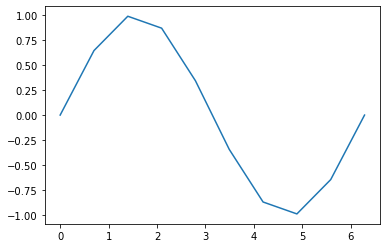
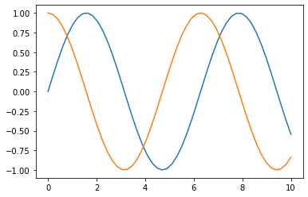
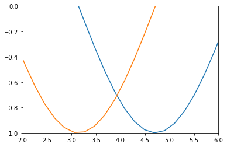
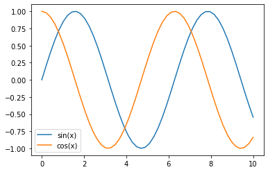
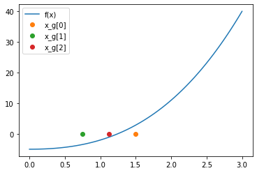

Tegning av grafer
Tegning av grafer
Oppgave 0: Sjekk av installasjonen
Vi kommer til å trenge både matplotlib og numpy for disse oppgavene.
Sjekk at følgende kode kjører fint på din installasjon av Python.
import numpy as np import matplotlib.pyplot as plt x = np.linspace(0, 2 * np.pi, 10) y = np.sin(x) plt.plot(x, y)

Vi har altså tegnet funksjonen \(f(x) = \sin x\) for \(x\)-verdier fra \(0\) til \(2\pi\).
Oppgave 1: En finere oppløsning
Vi ser at vi må angi både hvilke \(x\)- og hvilke \(y\)-verdier som skal tegnes.
Undersøk nærmere hva slags verdier x har fra eksempelkoden i forrige oppgave.
Hint: Dette kan du for eksempel gjøre ved å legge inn en print(x) i koden.
Forsøk ulike verdier enn 10 som sisteargument til linspace. Tegn plottene dine med plt.plot(x, y, 'bo'). (Her betyr 'bo' «/blue circles/», du kan se flere alternativer under Notes i dokumentasjonen.)
Oppgave 2: Matematiske funksjoner
Numpy-arrayer har den kjekke egenskapen at flere vanlige matematiske operasjoner blir gjort element for element. For eksempel gir det ingen mening å opphøye en liste i andre, men det fungerer utmerket for et array.
x = [1, 2]
x ** 2
TypeErrorTraceback (most recent call last)
<ipython-input-18-6d388756f2ce> in <module>
1 x = [1, 2]
----> 2 x ** 2
TypeError: unsupported operand type(s) for ** or pow(): 'list' and 'int'
import numpy as np x = np.array([1, 2]) x ** 2
array([1, 4])
Dette fungerer også for å legge til eller trekke fra tall.
Definer funksjonen \(f(x) = x^2 - 2\) i Python. (Her bruker du def f(x): osv.)
Definer tre matematiske funksjoner på samme måte. Vis hvordan du kontrollerer at de fungerer som du forventer.
Oppgave 3: Flere grafer
Du kan tegne flere grafer i ett plott ved å skrive flere plt.plot-linjer etter hverandre.
import numpy as np import matplotlib.pyplot as plt x = np.linspace(0, 10, 100) y1 = np.sin(x) y2 = np.cos(x) plt.plot(x, y1) plt.plot(x, y2)

Tegn alle funksjonene dine fra oppgave 2 i samme plott.
Oppgave 4: Grensesetting
Du kan velge hvilke \(x\)- og \(y\)-verdier du ønsker at plottet ditt skal være for ved å bruke funksjonene xlim og ylim.
For eksempel kan vi «zoome» inn på et område ved å gjøre som følger:
import numpy as np import matplotlib.pyplot as plt x = np.linspace(0, 10, 100) y1 = np.sin(x) y2 = np.cos(x) plt.plot(x, y1) plt.plot(x, y2) plt.xlim(2, 6) plt.ylim(-1, 0)

Legg merke til at vi ikke beregner noen verdier av x eller y på nytt her, altså vil eventuelle uklarheter i linjene bli forsterket når vi zoomer oss inn på dem.
Lag to plot hvor du bruker andre grenseverdier enn det matplotlib gir deg som standard.
Oppgave 5: Navn på akser
Vi setter navn på aksene ved å bruke xlabel og ylabel.
Hjelpeteksten til xlabel ser ut som følger:
import matplotlib.pyplot as plt help(plt.xlabel)
Help on function xlabel in module matplotlib.pyplot:
xlabel(xlabel, fontdict=None, labelpad=None, *, loc=None, **kwargs)
Set the label for the x-axis.
Parameters
----------
xlabel : str
The label text.
labelpad : float, default: None
Spacing in points from the axes bounding box including ticks
and tick labels.
loc : {'left', 'center', 'right'}, default: :rc:`xaxis.labellocation`
The label position. This is a high-level alternative for passing
parameters *x* and *horizontalalignment*.
Other Parameters
----------------
**kwargs : `.Text` properties
`.Text` properties control the appearance of the label.
See Also
--------
text : Documents the properties supported by `.Text`.
Her ser du at xlabel er en funksjon som Set the label for the x-axis, altså setter navnet på \(x\)-aksen. Vi ser også at den er definert til å ta argumentene xlabel, labelpad og loc. Her har labelpad og loc verdier satt som «default», altså er ikke dette noe vi trenger å sette om vi ikke spesielt ønsker det. Vi må derimot gi en tekststreng (for eksempel "x-verdier"). Dersom vi ønsker å sette strengen "x" til å være navnet på \(x\)-aksen, skriver vi da plt.xlabel("x").
Sett navn på \(x\)- og \(y\)-aksen for et av plottene dine.
Oppgave 6: Navn på akser
På «programmørsk» kalles teksten som viser hvilke grafer som viser hvilke data for plottets «legend». Vi kan sette på det ved å gi hvert plot en label og kalle legend i etterkant.
import numpy as np import matplotlib.pyplot as plt x = np.linspace(0, 10, 100) y1 = np.sin(x) y2 = np.cos(x) plt.plot(x, y1, label="sin(x)") plt.plot(x, y2, label="cos(x)") plt.legend()

Kjør dette eksempelet og se at det oppfører seg som forventet.
Oppgave 7: Alt vi har lært til nå
Figuren under viser tre iterasjoner med halveringsmetoden for å finne et nullpunkt for funksjonen \(f(x) = x^3 + 2x^2 - 5\), hvor startverdiene er \(x = 0\) og \(x = 3\).
Hver av gjetningene er tegnet med en linje à la plt.plot(x_g, 0, 'o', label="x_g[2]"), hvor da x_g er verdien til denne gjetningen.

Forsøk å reprodusere denne grafen.